Aston Villa
Aston Villa FC var i stand til å gjøre noen kraftige endringer fra forrige sesong. Mye av dette skyldtes klubbens engasjement i overføringsmarkedet. Spesielt Ross Barkley hadde en enorm innvirkning, spesielt i den historiske 7-2-seieren over Liverpool. Midtbanespilleren var i stand til å spille mellom linjene, og holdt hele tiden Reds forsvar på kant. Videre betydde hans pressende mesterklasse at opposisjonen ikke kunne bygge fra baksiden slik de ville ha ønsket. Denne sesongen pleier Dean Smith å foretrekke den balanserte 4-2-3-1-formasjonen. Dette oppsettet kan endres til en klassisk 4-4-2, eller en robust 4-4-1-1 når behovet tilsier dette. Villa spiller et utrettelig spill, bygget på høyt pressende. Trezeguet og Ollie Watkins bistår Barkley og Jack Grealish med å plage forsvarere. Dette etterlater motstandere å rifle lange baller eller å spille mer stivt. Når dette skjer, faller midtbanespillere John McGinn og Douglas Luiz ned for å eliminere all plass som er igjen mellom linjene.
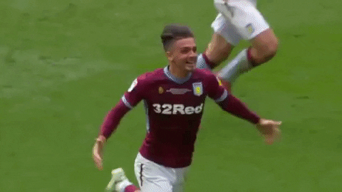Arsenal
Den vanlige oppfatningen om Arsenal i disse dager er at de har forbedret seg enormt under Mikel Arteta, og at bedre tider må være foran. Manageren har fått fordelen av tvilen så langt i sin tid ved roret i Emirates, men bortsett fra en FA Cup-seier, har det ikke vært for mye å feire for Arsenal-fans siden Arteta tok ansvaret. Gunners har vært svak å starte denne sesongen, spesielt foran mål, noe som alltid vil være et problem gitt at deres primære dilemma det siste tiåret har vært i den andre enden av banen. Med noen få viktige tillegg i Gabriel og Thomas Partey, kan Arsenal være satt til en sesong igjen blant de seks beste. Men de har en enorm jobb å gjøre for å komme dit, spesielt med tanke på den urolige starten på denne Premier League-sesongen, og deres egne personlige problemer for å starte kampanjen. Gunners sitter for tiden 11. på tabellen, med en målforskjell på -1. Men likevel tror mange Arteta er den rette mannen for jobben, og at bedre tider er fremover.
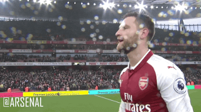Brighton
Det er veldig enkelt å sette de ukjente enhetene mot bunnen av pakken når du spår før sesongen. Vi vet ganske enkelt ikke hvordan Brighton skal prestere i Premier League fordi vi aldri har sett dem gjøre det. Andre klubber som potensielt kan være i fare denne sesongen som Watford, Burnley, Swansea og til og med nykommere Newcastle har alle før vist at de har det som trengs for å overleve, og med Brighton har vi bare ikke sett det. Mangelen på Premier League-erfaring kan virkelig skade dem til slutt. Det var ikke et problem for slike som Leicester og Bournemouth, men det var et problem for slike som Cardiff og Blackpool, så det er utrolig vanskelig å si. Den ene tingen som Bournemouth absolutt har på sin side, er en tropp av stor størrelse med mange virkelig fit, atletiske utespillere, hvorav mange burde være holdbare nok til å unngå skade hele sesongen. Men til tross for talentene til kommende spillere som Dunk, Knockaert og erfaringen fra spillere som Bruno Saltar og Steve Sidwell, kan det hende at Brighton og Hove Albion rett og slett ikke har nok av det som trengs for å gjøre det i Premier League for øyeblikket.

Burnley
Uansett årsak, i begynnelsen av sesongen, er Burnley ofte sett på som en favoritt for nedrykk. Til tross for det, og til tross for at deres rollebesetning og mannskap (manager inkludert) ikke er den mest stjernespekkede, har de kontinuerlig styrt unna nedrykk fra Premier League siden opprykket i 2016. Siden nevnte opprykk har Burnley endt så høyt som 7. plass i tabellen og likte til og med en kort spell i Europa League, til tross for at han aldri spilte det mest prangende merket av fotball. Sean Dyche og hans team spiller en grov, ukonvensjonell merkevare av fotball, og deres spenstige 4-4-2 low-block har plaget selv de aller beste av lag og ledere. Kanskje mer imponerende i den nåværende tiden, har Burnley nå gått 7 kamper ubeseiret i Premier League, slik at Sean Dyche kan hevde sin andre noensinne Manager of the Month Award i februar 2020.
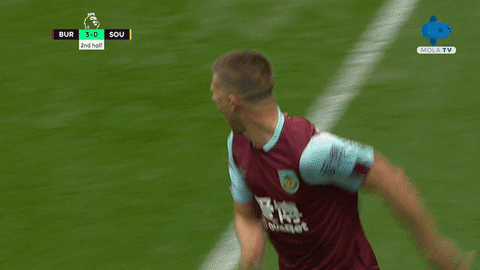Chelsea
Frank Lampard likte en vellykket første sesong med Chelsea F.C., til tross for at ingen nye sommersigneringer kom gjennom døren. The Blues svevde rundt 4. for det meste av sesongen bak Leicester City, og sikret seg til slutt 4. bak Manchester United. Lampard stolte stort på ungt talent i 2019-20, og klubben ble belønnet med fantastiske forestillinger fra slike som Mason Mount, Tammy Abraham, Fikayo Tomori og Reece James. Imidlertid, selv om alle disse spillerne har potensial, er de kanskje ikke på nivå med Premier League-mestere ennå. Lampard og de over hans autoritet anerkjente det og svarte med flere nye signeringer av høyeste kvalitet. Faktisk har svært få andre klubber (på papiret) gjort bedre sommeroverføringsvindu ... noensinne. Til tross for løftet alle deres nye signeringer har, gjenstår det å se hvordan de alle vil komme sammen, og om det er verdt det å benke noen av de unge spillerne som sikret seg Champions League-finish i fjor, for en haug med nye spillere som har aldri spilt sammen før.
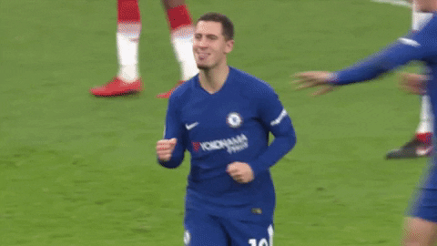Crystal Palace
Selv om Roy Hodgson er langt fra det flotteste laget i Premier League, har Crystal Palace jobbet som en maskin de siste årene, og har gjort dem til en av de mest organiserte sidene i hele Europa. Den systematiske måten de spiller på, er faktisk ganske enkel, og selv om den er skattleggende og krevende av spillerne, er den ikke altfor omfattende. I stedet for taktiske genier og midtbanemastroer, er hver eneste spiller en absolutt arbeidshest og forstår hvilken rolle de spiller i laget til en tee. Dette har ført til Crystal Palaces suksess under Roy Hodgson, og i 2020-21 har de vunnet sine to første Premier League-kamper for første gang i historien. Vi ville være dumme å la oss rive med og tenke at de er bestemt for europeisk fotball denne sesongen, men Eagles er absolutt verdt å undersøke for deres unike tilnærming til livet i Premier League.
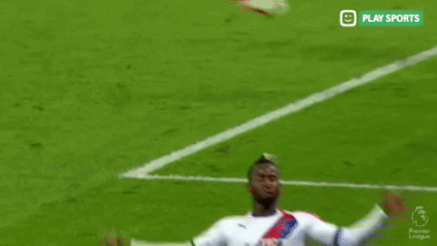Everton
Etter tilsetningen av Rodriguez, Allan og den nært forestående ankomsten av Watfords Doucoure, vil Evertons viktigste styrke ligge på midtbanen. Ancelotti favoriserte en tradisjonell 4-4-2-formasjon etter sin ankomst til England halvveis i sesongen 2019/20, men alternativene som var tilgjengelig for ham på sentral midtbane, passet ikke akkurat den tilnærmingen. Slik som Gylfi Sigurdsson, Tom Davies og Morgan Schneiderlin hadde rett og slett ikke bena eller kroppsbygning som trengs for å spille den rollen effektivt, og dette er et problem Ancelotti har adressert i løpet av sommeren. Tempoet, kraften og atletikken til Allan og Doucoure, kombinert med deres taktiske disiplin, vil tillate Rodriguez å spille på høyre side av midtbanen og forårsake en trussel mot motstanderne med sin favoriserte venstre fot og tekniske evne. Ancelotti er imidlertid ikke stiv i sin tilnærming, og allsidigheten til Rodriguez er en av hans største eiendeler. Hvis italieneren vil spille med et tradisjonelt "nummer ti", er colombianeren mest hjemme der, akkurat som han er i stand til å spille på venstre ving i en 4-3-3-oppstilling. Ancelotti har nå en overflod av alternativer til rådighet som kan matche noen av de beste midtbanene i ligaen.
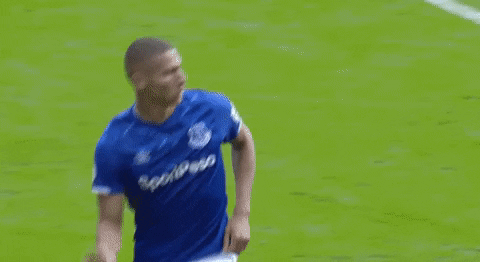Fulham
I midtforsvaret skryter Fulham forrige mesterskapssesongs fremragende midtforsvarer i Tim Ream. Amerikaneren var drivkraften bak promoteringsavgiften, med sin effektive utførelse av forsvar og forsikringer i luften som var avgjørende for deres suksess. Sammen med Michael Hector dannet han et fint partnerskap foran Marek Rodák, et annet imponerende medlem av forrige sesongs tropp. I angrepet er det en uforutsigbarhet med Cottagers 'fremover som er grunn til bekymring. Gitt, de aller fleste av målene deres kom gjennom Aleksandar Mitrović, men Anthony Knockaert og Josh Onomah har nok teft til at de kan forme en mulighet ut av luften. Selvfølgelig er det serberen som er deres viktigste styrke. Etter å ha toppscoret i Championship forrige sesong med 26 mål, er hans voldsomme fysiske tilstedeværelse sikkert.

Leeds
Leeds har gjort det bra med å holde tak i Kalvin Phillips, men de har også klart å få tilbake en rekke kjente ansikter fra forrige sesong. Helder Costa og Illan Meslier har signert på faste avtaler, og Jack Harrison kommer tilbake på nok et sesonglån fra Manchester City. Leeds har akseptert at Ben White ikke kommer tilbake denne sesongen, og valgte i stedet et nytt ansikt for å styrke forsvaret. Robin Koch har sluttet seg til klubben fra Freiburg og vil fylle hullet som White har igjen, men til en mye rimeligere pris. En stor bekymring på vei inn i sesongen var mangelen på en ekte talisman som førte linjen i angrep. Patrick Bamford klarte 16 mål og fire assist fra 45 mesterskapskamper forrige sesong, noe som er en akseptabel avkastning, men en som kan forbedres på. I sine 27 Premier League-kamper så Bamford aldri ut til topptur og klarte bare ett mål da han var på Middlesbrough. For å bekjempe dette har Leeds imidlertid signert Valencias Rodrigo i en klubbrekord på 27 millioner pund. 29-åringen scoret 59 mål og lagde 41 assist i 220 opptredener for Valencia, og tilførte noe ekte Premier League-nivå til angrepet.
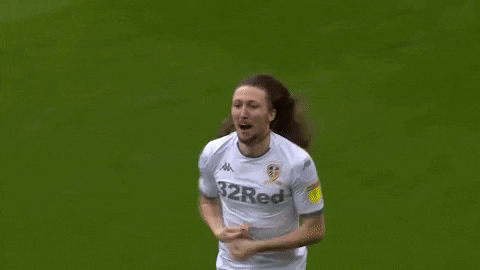Leicster
Selv om du ikke hadde trodd det å se på de katastrofale siste kampene, hadde Leicester det femte beste forsvaret i Premier League forrige sesong. Mye av dette er nede på revens utrolig sterke ryggrad. Noen få hjernepilter til side, Kasper Schmeichel er fortsatt en av de mest pålitelige stopperne i England. Dansken er velsignet med sylskarpe reflekser og virkelig distribusjon i verdensklasse - kilden til mange Leicester-motangrep gjennom årene. Foran ham utfyller Caglar Soyuncu og Jonny Evans hverandre perfekt. Førstnevnte er en aggressiv stopper, ikke redd for å ta noen få risikoer. I mellomtiden er Evans en Rolls Royce-forsvarer som utstråler all den roen og roen du forventer av en Premier League-mester. Så er det Wilfred Ndidi, den bemerkelsesverdige ballvinnermaskinen som på poeng forrige sesong spilte som den beste defensive midtbanespilleren på planeten. Alle medlemmene av Leicesters sta forsvarsrygg vil fortsette å spille store roller neste sesong, og sørge for at revene igjen vil være veldig tøffe å bryte ned.Leicester er strålende på disken. I Ricardo Pereira og den ankomne Timothy Castagne har de to fullbacker som fungerer som hjelpevinger. Begge er velsignet med ødeleggende tempo og lureri og er i stand til å kjøre laget frem i motstanderens halvdel på et øyeblikk. Tempoet deres i back-posisjonene styrkes av lignende eksplosivitet utenfor. Harvey Barnes, Ayoze Perez og den mye skadede, men effektive, Demarai Gray er alle whiz-barn, som lett kan springe forbi de fleste forsvarere i landet. Denne tempofesten er i spissen for den eviggrønne Jamie Vardy. Modnet fra den altfor entusiastiske vindhunden som pleide å jage ned hver eneste tapte sak, sparer 33-åringen i stedet energien sin for å sprenge gjennom baller i disse dager. Til tross for sin alder viser forrige sesongs Premier League Golden Boot-vinner ingen tegn til å bremse ned.
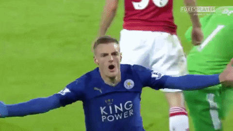Liverpool
Liverpools nøl med å gjøre store forretninger i sommer har i stor grad blitt festet på styrets nøysomhet, men en viktig medvirkende faktor har vært Klopps motvilje mot å forstyrre status quo som har ført laget hans til toppen av treet. Mens ankomsten av Takumi Minamino og Kostas Tsimikas har utlignet avgangene til en håndfull frynspillere, har kjernen i gruppen holdt seg konstant siden den store rekrutteringsdriften i 2018, noe som resulterte i en av de mest stabile og sammenhengende troppene i verdensfotballen. Personligheter utfyller hverandre over hele troppen, og det er kjemi uansett hvor du ser. Det er klart at de røde gjennom kontinuitet og langsiktig strategi har skapt en grundig balanse mellom personligheter. Den urokkelige mangelen på noen belastende egoer har skapt den typen atmosfære som vinner titler, og dette har potensial til å skille dem fra jaktpakken, som hver prøver å bygge det Liverpool har perfeksjonert.Wolves, Leicester, Sheffield United, Chelsea, West Ham, Tottenham, Brighton, Crystal Palace. Alle kunne føle at de gjorde nok for å slå Liverpool på et tidspunkt forrige sesong, men likevel lurte hver på hvordan de i all verden tapte. Noen har pekt på flaks i Reds 'avgift til tittelen, men du registrerer ikke en gevinst på 77% over en 100-spillstrekning gjennom enkel hell. Ingen kan forklare det, men i likhet med Sir Alex Fergusons dynastiske Man Utd har Liverpool en immateriell evne til å snappe seier fra middelmådighetens kjever.
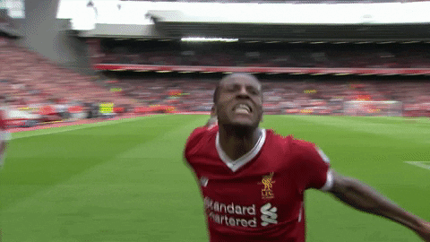Manchester City
En av de største fordelene Guardiolas by har over andre lag i Premier League, er troppsdybden. Med nye tilskudd som kommer inn døra i sommer, blir de bare dypere også. Nathan Ake ble signert fra Bournemouth for å styrke Citys defensive muligheter, og klubben var også opptatt av å bringe Kalidou Koulibaly til Etihad Stadium til en stor kostnad. Den sistnevnte avtalen må fullføres, med City fortsatt ganske tøff i forsvar. Spennende spanske kantspiller Ferran Torres har også sluttet seg til en relativt billig £ 20m-avtale fra Valencia.Leroy Sane og David Silva kan ha reist, mens Eric Garcia ser ut til å dra, men det er kvalitet i alle områder i City
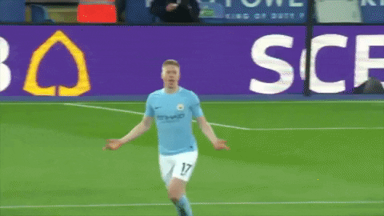Newcastle
Det kan komme som et sjokk å hevde forrige sesongs fjerde-laveste poengsumstyrker ligger i angrep, men Steve Bruce har forbedret kvaliteten til sin disposisjon foran. Med tillegg av det tidligere Bournemouth-paret Wilson og Ryan Fraser, har Newcastle fremover nå et helt annet syn. Platesignering Joelinton kjempet etter å ha flyttet 40 millioner pund fra Hoffenheim i fjor sommer, men noe av presset vil ha blitt løftet fra skuldrene hans etter engelskmannens ankomst fra sørkysten. Legg til den gåtefulle og alltid underholdende Allan Saint-Maximin, den energiske Miguel Almiron og Jonjo Shelveys utrolige pasningsområde og Newcastle kan være en alvorlig trussel mot de beste Premier League-forsvarene neste sesong.

Sheffield United
Det kan høres ut som et bakhåndskompliment, men samholdet på denne Sheffield United-siden var en nøkkelfaktor i suksessen forrige sesong, som i stor grad var basert på en parsimonious backline. Etter å ha vunnet opprykk med en 3-4-1-2-formasjon, ble Wilder kvitt den angripende midtbanespilleren og utplasserte utelukkende en resolutt 3-5-2 - ofte etterlot motstanderne med ni spillere å omgå for å score. Wilder avvek sjelden fra sitt førstevalgssett med forsvarere og midtbanespillere - hvorav sju spilte mer enn 85% av tilgjengelige Premier League-minutter. Det ble gjort få tilskudd til de defensivt tenkende spillerne i troppen, og denne kjennskapen så Uniteds endelige mål på 39 mål innrømmet, bare forbedret av divisjonens topp tre. Mens bladene var gode til å forsvare, var de ikke nødvendigvis et defensivt lag. Riktignok var de ikke de raskeste til å trekke avtrekkeren forrige sesong, men da de gjorde det, var denne innsatsen alltid fra gode posisjoner. Ingen side tok skudd fra nærmere mål enn Sheffield United sist termin, og bare Manchester City kunne bedre sine forventede mål per skuddsnitt.

Southampton
I Danny Ings og James Ward-Prowse har Southampton en dynamisk duo som kan starte for flertallet av lagene i Premier League. Ings var produktiv forrige sesong da han minnet alle på hvor god en spiller han kan være når han ikke er hindret av skade. Mens Ings 'mål skaffet ham det meste av applausene, var Ward-Prowse like instrumental. Saints-kapteinen startet hvert kamp i sesongen, dikterte tempoet og sørget for sårt tiltrengt stål i sentrum av parken. Deres bedrifter har blitt belønnet av England-manager Gareth Southgate, med begge spillerne innkalt til dagens Nations League-tropp. Hvis Saints vil forbedre stillingen i forrige sesong, vil de lete etter paret til å lede an igjen. Mens Ward-Prowse og Ings er medvirkende på banen, fortjener manager deres seriøs anerkjennelse for sin rolle i Southamptons snuoperasjon. Mindre ledere kan ha smuldret etter det ødeleggende nederlaget, men Hasenhüttl var urokkelig. Han endret systemet og fant en måte å få mest mulig ut av spillerne sine. Det har ikke vært den jevneste turen så langt for østerrikeren, men han viser sakte hvorfor han blir tenkt så høyt i fotballkretser - Southampton høster fordelene ved å holde fast ved ham.

Tottenham
Med talentet de besitter, var dette en Spurs-side som rett og slett ikke skulle ha havnet på sjetteplass i Premier League sist. En mengde faktorer gikk inn i klubbens og Mauricio Pochettinos død siste periode; fra individuelle feil til en følelse av stalenhet, men talentet forble. Harry Kane, Son Heung-min, Dele Alli og Toby Alderweireld fikk selskap av store penger som ankom Tanguy Ndombele og Giovani Lo Celso om sommeren, mens Steven Bergwijn ble med i januar. En ganske anstendig tropp, ikke sant? Men dette var en Lilywhite-enhet som tydeligvis manglet balanse - hovedsakelig på grunn av mangel på en defensiv midtbanespiller og en impulsiv, ineffektiv ivoriansk nedover en flanke - problemer de har forsøkt å løse i sommervinduet ved å utarbeide i Premier League-påvist duo Pierre-Emile Hojbjerg og Matt Doherty. Med disse to tilskuddene vil Mourinho helt sikkert føle at han er velsignet med en mer harmonisk og fleksibel tropp.
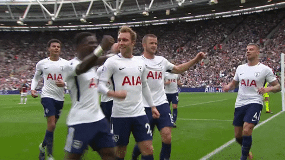West Bromwich
Å skape sjanser burde ikke være et problem for Baggies, selv om det kan være å fullføre dem - innen kort tid. Matheus Pereira og Grady Diangana er to svært talentfulle ballbærere som ga Championship-forsvarere mareritt forrige sesong. Den utlånte West Ham-mannen, som har inngått en fast avtale, hadde en hånd i åtte mål og seks assists, mens Pereiras teller på 16 assists og åtte mål i forrige sesong var en fremtredende del av målinvolveringen i klubben da han ledet anklagen. West Brom rangerte bare Leeds bak mål og forsøk på mål forrige sesong, men deres opprykksvinnende kampanje ble i stor grad drevet av talentene til Pereira.

West Ham
Sesongen 2019/20, frustrerende, fremhevet mangelen på reelle positive i West Hams spill, ettersom kontrasterende spillestiler gjorde det vanskelig å fastslå hva lagets kjerneidentitet er. Når det er sagt, er en fasett av Hammers spill som er en åpenbar styrke, deres evner i luften. Issa Diop, Angelo Ogbonna og Sebastien Haller var allerede en håndfull å håndtere fra dødballer og lange baller, men tilsetningen av boks-til-boks-midtbanespiller Tomáš Souček har ført ting til et helt nytt nivå. Den moderne dagen Marouane Fellaini - det var den Moyes tenkte på da han i det minste signerte ham - var en plage for alle sider West Ham kom opp etter låsing, og han scoret viktige mål mot Chelsea, Newcastle og Watford for å hjelpe klubben West Ham's tropp er ikke velsignet med en hel rekke stjernespillere, men de har et godt antall som kan vippes rundt hvis pakken trenger å blandes om. Declan Rice og Antonio er de to spillerne som kommer til å tenke når du nevner allsidighet, men Pablo Fornals, Manuel Lanzini, Felipe Anderson og Andriy Yarmolenko kan alle spille på hver side av midtbanen eller gjennom midten. Til hvilken standard de spiller i disse rollene er et spørsmål for en annen dag.

Wolverhampton
Nuno har utviklet et veldig godt strukturert 3-5-2-system som spillerne er kjent med. Alle kjenner sin rolle, og enda viktigere, alle vil lykkes i disse rollene. De er glade for å lene seg tilbake, avstå besittelse og fange motstanderne på disken - den defensive produksjonen gir mulighet for en rask endring fra forsvar til angrep, noe som gjør dem så truende. Når de får ballen, angriper de enten med tempo og kraft gjennom slike som Traore - som enten kan kjøre gjennom midtbanen eller angripe plassen bak hele ryggen og midthalvdelen - eller ved å spille over toppen inn i rommet som er opprettet fra deres defensive arbeidsfrekvens. De to styrkene går hånd i hånd. Når du har flere innflytelsesrike ledere på din side, er det mer sannsynlig at du holder deg til de strenge instruksjonene i en spillplan og holder deg organisert. Det er ikke mange større ledere for øyeblikket i Premier League enn Conor Coady. Han leder med autoritet, overbevisning og instinkt, på en måte som motiverer hans side til å gjøre det bedre. Det ledelsesnivået, kombinert med erfaringen fra veteraner som Rui Patricio og Joao Moutinho, som begge har spilt på høyeste nivå med Portugal og i Champions League, har en stor psykologisk effekt på en tropp som øyeblikkelig går i riktig retning .